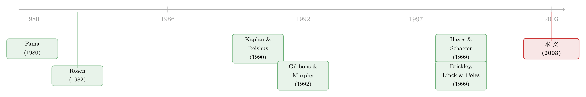

好表现，是一张能跳槽的入场券——而它只对「大人物」生效
本文读的是 Fee & Hadlock (2003, Review of Financial Studies)：他们用美国大公司 1990–1998 年的高管流动数据发现，那些被别家挖去当 CEO 的经理，原雇主的股价表现系统性地高于各类基准——而且这种「好业绩换来好去处」的关系，只在被挖去当一把手、且原本职位越高的人身上才成立；横向跳槽（去别家当非 CEO）则与业绩毫无关系。期权和限制性股票这副「金手铐」并没锁住人，真正拴住高管的，是公司内部那个看得见的「接班人」位置。
1 一个被默认了三十年的假设
公司金融里有一类模型，几乎是所有研究生第一年都会碰到的——职业关注 (career concerns)。它的故事很优雅：经理人不只是为今年的奖金工作，他还惦记着自己在外部劳动力市场上的「身价」。如果外面的雇主会根据他现在公司的业绩来推断他的能力，那么他就有动机去把现任雇主的股价做上去，哪怕老板没给他额外的激励。Fama (1980) 和 Holmström (1982) 把这套逻辑写成了模型，后来的人接着用它去解释资本投资、盈余操纵、风险承担、资本结构……一条产业链。
但你有没有想过，这整座大厦底下压着一块从来没人认真验过的砖？
那块砖就是：劳动力市场真的会拿「公司业绩」当作「经理能力」的信号吗？ 模型里它是个假设；现实里它到底成不成立，没人知道。Fee & Hadlock 在文章里说得很直白——尽管学界对职业关注模型兴趣浓厚，他们「不知道有任何一篇已发表的金融/经济学论文，检验过在职公司高管自愿换工作的动态机制」。
这就是本文的切口。它不去构造又一个职业关注的理论变体，而是回过头去问一个最朴素、却被跳过去的实证问题：业绩好的公司，它的高管是不是更容易被别人挖走？
2 一个最小的「挖角」模型
要回答这个问题，得先想清楚「挖角」这件事在经济上是怎么运转的。作者搭了一个极简的模型，核心借用了 Rosen (1982) 的一个洞见：效率要求把高能力的人，配置到「能力回报更高」的岗位上——比如更大的公司、更高的职级。
设定是这样的。\(t=0\) 时有 \(N\) 个经理，经理 \(i\) 的能力是一个未知参数 \(\theta_i\)，所有人对它的先验都是 \(N(\mu, \sigma_\theta^2)\)。现任雇主 \(C_i\) 的利润 \(\pi_i\) 携带着关于能力的信息：
$$\pi_i = \theta_i + \varepsilon_i, \qquad \varepsilon_i \sim N(0,\ \sigma_\varepsilon^2)$$
\(t=1\) 时利润被观察到，一个「掠夺者」(raider) 出场，想从别家公司挖一个经理过来。这里是模型的关键一步：经理 \(i\) 对现任雇主的价值写成 \(V(\theta_i + m_{ic})\)，对掠夺者的价值写成 \(W(\theta_i + m_{ir})\)，其中 \(m_{ic}, m_{ir}\) 是经理与两家公司各自的「匹配质量」。\(V\) 和 \(W\) 这两个参数，度量的是经理这份工作在各自公司里的「重要程度」——直觉上它和公司规模、职级高低正相关。
掠夺者观察到利润 \(\pi_i\) 后，会用标准的贝叶斯更新去估计能力。这一步是教科书结论 [DeGroot (1970)]：
$$\hat{\theta}(\pi_i) = \frac{\sigma_\varepsilon^2\, \mu + \sigma_\theta^2\, \pi_i}{\sigma_\varepsilon^2 + \sigma_\theta^2}$$
注意 \(d\hat\theta / d\pi_i > 0\)：利润越高，外界对你能力的估计越高。这没什么意外。意外在后面。
由于现任雇主总愿意出到 \(V(\hat\theta_i + m_{ic})\) 来留人，掠夺者要挖走经理 \(i\)，就得付出这个数，于是她从挖角中得到的剩余是 \([W(\hat\theta_i + m_{ir})] - [V(\hat\theta_i + m_{ic})]\)。她要在所有候选人里挑剩余最大的那个。对经理 \(i\) 而言，「其他所有候选人里最好的那个」是一个与 \(\pi_i\) 无关的随机变量，记为 \(\tilde A\)。整理之后，经理 \(i\) 被成功挖走的条件就变成了一道不等式。把「金手铐」(即跳槽要放弃的好处 \(B\)，比如未归属期权、或眼看要到手的晋升) 也加进去，就得到模型最核心的那个判据：
现在来看这个不等式右边——它整个儿与 \(\pi_i\) 无关。而左边对 \(\pi_i\) 的导数，符号完全由 \((W-V)\) 决定。于是有了全文的理论支点，命题 1：
$$\text{若 } W-V>0,\ \frac{dP_i}{d\pi_i}>0;\quad \text{若 } W-V=0,\ \frac{dP_i}{d\pi_i}=0;\quad \text{若 } W-V<0,\ \frac{dP_i}{d\pi_i}<0$$
这才是真正反直觉、也真正有用的一步。它说：业绩好不好，能不能帮你跳槽，取决于你要跳去的那个位置「比现在更看重能力」还是「更不看重」。 如果掠夺方是家更大的公司、或者那个岗位责任更重（\(W>V\)），高业绩会让你更容易被挖走；可如果你只是平级或向下挪一步（\(W \le V\)），业绩再好也帮不上忙——因为把一个高能力的人从一个重视能力的位置，挪到一个不那么重视能力的位置，根本没有效率增益可言。
而对金手铐 \(B\)，求导立刻得到 \(dP_i/dB < 0\)：被期权或晋升预期锁住的人，更难被挖。模型还顺手提醒了一句很要紧的话——当 \(W-V\) 很大时，能力匹配主导一切，\(B\) 这种因素几乎无足轻重；只有当 \(W-V\) 很小或可忽略时，\(B\) 才有发挥空间。记住这句话，它后面会变成一个干净的实证检验。
3 三个针锋相对的假设
从模型里，作者拎出三个可以拿数据去对的假设。
首先是「经理能力假设」(managerial ability hypothesis)：如果市场拿业绩当能力信号，我们就该看到业绩与「跳去更好位置」正相关，而与平级/向下跳无关。更妙的是，它还有一个可证伪的推论——如果总体公司业绩对高职级高管的能力信息含量更大（CEO 对全公司业绩负责，一个事业部副总就未必），那么这种「业绩—外部机会」关系，应该在职级越高的人身上越强。
接着，一个自然的反驳是「训练场假设」(training grounds hypothesis)：也许业绩好的公司的经理之所以抢手，不是因为他「赢过」，而是因为他在好公司里「学会了怎么赢」——积累了人力资本 [呼应 Becker (1964) 的传统]。它和能力假设有一样的预测（业绩高→外部机会多），但有一个关键差别：它不预测「职级越高、关系越强」。于是「职级」就成了把这两个假设掰开的那把刀。
然后是「工作锁定假设」(job-lock hypothesis)：期权、限制性股票、内部晋升机会、公司专用人力资本，这些都可能让人不想走。这正是模型里的 \(B\)。
4 两份样本，一个互补的拼图
要同时回答「谁被挖」和「谁被锁住」，一份样本不够。作者很坦诚地构造了两份。
样本 1 专为「需求侧」（谁被挖）设计：他们识别出 2,196 家美国大型上市公司在 1990–1998 年间雇佣的每一位外部 CEO，然后回头去量这些人原雇主的股价表现，基准用的是五年期买入持有收益 (five-year buy-and-hold returns)，并对照多种基准（这套长期异常收益的度量，正是 Barber & Lyon (1997)、Lyon, Barber & Tsai (1999) 那一脉的方法论）。结论很直接：这些被挖去当 CEO 的人，原雇主的股价表现系统性地优于基准；而且对「从老东家直接跳到新东家、中间不空档」的人更强，对原本职级更高的人也更强。这恰恰是能力假设、而非训练场假设独有的那个预测。
但样本 1 有个天生的短板：它只看到了「成功跳槽」的人，看不到那些「本可以跳却留下了」的人，所以没法谈留任。
于是作者补了样本 2，专攻「供给侧」（谁被锁住）：443 家大型上市公司，1993–1998 年，识别出所有高管离职、且离职后立刻去另一家上市公司任职的案例，跑 logit 模型。这份样本的好处是能把「被解雇、自然退休、随分拆/剥离的业务一起走」这些会污染普通离职研究的情形排除掉，还能精确算出一个人跳槽时放弃掉的期权与限制性股票的价值——这正是 \(B\) 的一个干净代理。
样本 2 确认了样本 1：五年期高股票回报确实提高了高管跳去别家当 CEO 的概率；但与理论一致，跳去非 CEO 职位（更平级的跳动）的概率，与业绩无关。
5 金手铐，其实没那么硬
到这里，故事本可以收尾在「能力假设成立」上。但本文最让我觉得有意思的反转，在留任这一侧。
「金手铐」是个流行了很多年的说法——未归属的期权和限制性股票，被认为是把高管牢牢拴在公司里的镣铐。Mehran & Yermack (1999) 也提供过支持这一说法的 CEO 层面证据。可 Fee & Hadlock 拿着他们精确算出的期权/限制性股票价值去跑，没有找到令人信服的证据表明这副镣铐显著降低了「跳船」概率。用他们的话说：金手铐看起来并不很强。
那把人锁住的到底是什么？答案是模型里同样属于 \(B\)、却常被忽略的另一半——内部晋升机会。他们发现，一个公司里若存在「继任在望者」("heir apparent")，会显著提高其他高管跳去别家非 CEO 职位的概率。逻辑很顺：当你头顶上那个 CEO 位置已经被内定给了别人，你在内部「再上一层」的通道就被堵死了——这正是 Rosen (1982) 说的「卡位约束」(slot constraints)。与其在原地等一个永远等不到的位置，不如出去谋一个平级甚至略低、但有上升空间的去处。（关于「为了显得能干而扭曲资源配置」的职业关注另一面，可参见《为了「显得能干」，钱都堆去了那块看得最清的业务》。）
注意这里和模型第 2 节那句话的呼应：\(B\) 只在 \(W-V\) 很小（平级跳动）时才显形。所以「继任在望者」的效应恰恰出现在非 CEO 跳槽上，而不是在那些 \(W-V\) 很大、能力匹配主导一切的「跳去当 CEO」上。模型和数据，在这里严丝合缝地对上了。
6 金钥匙与金手铐：合同的另一端
最后，作者把镜头转到新雇主开出的合同上。这些被挖去当 CEO 的人，通常会拿到一大笔初始「入职授予」——期权、限制性股票、现金签约奖金的组合。作者管它叫「金钥匙」("golden keys")。
有意思的是这把金钥匙的「形状」：它的价值与高管在老东家留下的那部分未归属期权和限制性股票（即「金手铐」）高度相关。换句话说，新雇主开价时，很大一部分是在「赎买」你为跳槽而放弃的东西——这正是模型里「掠夺者必须补偿经理损失的 \(B\)」那个假设的现实投影。除此之外，他们还找到了一些证据，表明金钥匙的价值也系统性地与老东家的业绩相关。业绩好→能力推断高→挖角的剩余大→开得起更高的价。一条链条，从模型一直走到了合同条款里。
7 文献脉络
把这篇文章放回它所在的那条河流里看，会更清楚它的位置。
源头是 Fama (1980) 和 Holmström (1982)：他们奠定了职业关注的理论范式，让「外部劳动力市场充当隐性激励」成为公司金融的一块基石。与此并行的是 Rosen (1982) 在劳动经济学里的岗位分配思想——高能力者应被配到能力回报高的岗位——本文的模型几乎是直接站在它肩膀上。到了 1990 年代，Gibbons & Murphy (1992) 把职业关注与显性激励合同结合起来，做了理论与实证的双重处理；而实证这一侧，最接近的不是高管市场，而是外部董事市场：Kaplan & Reishus (1990)、Brickley, Linck & Coles (1999) 发现，业绩好的公司的经理更容易拿到外部董事席位。

但董事市场有它的局限：外部董事多半给的是临近退休的资深高管，而职业关注最该起作用的，恰恰是更年轻、更初级的在职经理。Hayes & Schaefer (1999) 往前推了一步，发现高管离职时，离开的公司市场反应为负、加入的公司为正——暗示被挖的是能力强的人；可他们仍没回答「市场是否拿业绩当能力信号」这个核心假设。本文正落在这个空白上：它第一次直接检验了在职公司高管自愿流动背后的那台机器，把职业关注模型那块「压在地基里、却没人验过的砖」翻了出来。（关于「炒掉 CEO 之后公司是真变好了、还是只是运气回归」的相关追问，可参见《炒掉一个 CEO 之后，公司真的变好了吗》；关于声誉如何写进高管的股权薪酬，可参见《老板的「名声」，藏在他工资条里那根弦的松紧上》。）
8 评论与延伸（Q&A + 研究方向）
(a) 几个可能的疑问
Q：「业绩好的人更容易被挖去当 CEO」，这难道不是显而易见吗？为什么还值得发一篇 RFS？
因为它检验的不是「好人被挖」这个常识，而是一个被默认却没验过的机制——市场是否把公司股价当作个人能力的信号。股价是公司层面的、嘈杂的总量指标 [Rosen (1992) 就提醒过它是能力的 noisy measure]；个人能力是个体层面的。两者之间的桥并非天然存在。本文真正的贡献，是用「职级越高关系越强、平级跳动关系消失」这组差异化预测，把这座桥的存在给钉实了。
Q：怎么区分「能力假设」和「训练场假设」？它们的预测不是一样吗？
在「业绩→外部机会」这一条上确实一样，分不开。分水岭是职级：能力假设预测「越高级、关系越强」（因为总体业绩对高级别高管的能力信息含量更高），训练场假设不做这个预测。数据站在了能力假设这边——业绩与跳槽的关系，对原本职级更高的人明显更强。
Q：样本 1 只看「成功跳槽」的人，会不会有严重的选择偏误？
会，作者也很清楚，所以才补了样本 2。样本 1 看不到「本可跳却留下」的反事实，单独看它无法谈留任、也难免高估需求侧效应。但样本 2 用 logit 模型把整个风险集（所有在职高管）都纳进来，对每个人估计跳与不跳的概率，从设计上补上了这个缺口。两份样本结论一致，才让整幅拼图可信。
Q：「金手铐没用」这个结论，会不会只是因为期权价值算得不准？
这恰恰是本文相对前人的强项。它不是用笼统的「管理层换届」，而是用真实的跳槽数据，排除了解雇、退休、随业务剥离离开等噪声，并精确测算了跳槽放弃的期权与限制性股票价值。在这么干净的度量下仍找不到显著锁定效应，比用粗糙代理得到「金手铐有效」更有说服力。当然，这是美国大公司的样本，未必能外推到期权占薪酬比重更高的科技初创。
Q：「继任在望者」推人走，会不会是反向因果——是公司预见某人要走，才赶紧立了接班人？
这是个真实的担忧。作者的解释方向是 Rosen (1982) 的卡位约束：接班人堵死了向上通道，逼人外流。但「先有离职意向、后立接班人」的反向链条在横截面数据里很难完全排除。要彻底厘清，需要能定位接班人确立的确切时点、并看它之后的离职率变化的事件研究设计。
Q：用五年买入持有收益当业绩，长期异常收益的度量本身就有名的不稳，这会动摇结论吗？
长期 BHAR 的统计性质确实敏感 [Barber & Lyon (1997)、Kothari & Warner (1997)]，基准选择能左右结论。本文用了多种基准做稳健性，方向一致。但严格说，「业绩」的代理换成会计指标或风险调整后收益时，效应的量级可能波动——作者也确实试验了会计指标。结论的符号与差异结构（高职级更强、平级无关）比具体系数更稳。
(b) 几个可能的研究问题与提案
1. 把这套检验搬到公司债/信用市场的「分析师与交易员」劳动力市场
【经济故事】债券分析师、信用交易员的「业绩」是组合收益或定价准确度，远比股价干净、且个体化。如果劳动力市场也拿团队/台子的业绩当个人能力信号，应能观察到类似的「业绩→被挖」关系，且对资深台头更强。 【可行性】中。需要交易台层级的薪酬与流动数据，FINRA BrokerCheck、领英简历可拼出流动轨迹，但个人业绩数据通常是私有的，识别个人贡献是难点。
2. 「继任在望者」与高管外流的事件研究
【经济故事】本文的横截面相关，留下了反向因果的口子。若能用 COO 晋升、「总裁兼 CEO」头衔合并等离散事件精确标定「接班人确立」时点，看其后 1–3 年其他高管的外流率，就能把卡位约束的因果效应钉得更死。 【可行性】高。ExecuComp + BoardEx 能识别头衔变动时点与高管去向，是一个干净的交错事件研究（注意交错 DiD 的陷阱，可参见《当「更稳健」的设计悄悄把符号弄反了》）。
3. 外资持有人与本国高管市场的「能力信号」是否一致
【经济故事】当一家公司被大量外资持有，其股价信息含量、被外资关注度都会变化。外资是否会改变本国劳动力市场把「公司业绩」翻译成「个人能力」的方式？跨国挖角中，\(W-V\) 的跨境差异（更大的全球平台 vs 本地岗位）应放大业绩效应。 【可行性】中。需跨国高管流动数据 + 外资持股（如 FactSet/EPFR），跨境流动样本稀薄是主要障碍。
4. 金钥匙—金手铐的赎买率，是否随劳动力市场松紧而变
【经济故事】本文发现入职授予「赎买」了放弃的期权。一个自然的延伸：在高管供给紧张的年份/行业，赎买率（金钥匙/金手铐之比）是否更高？这等于把模型里掠夺者的议价能力内生化。 【可行性】高。ExecuComp 的薪酬明细 + 行业层面的高管流动率即可构造，识别上可用行业-年份的供给冲击。
5. 「业绩—被挖」关系在信息环境改善后是否增强
【经济故事】若市场靠业绩推断能力，那么当公司信息披露更透明、股价信息含量更高时，\(\hat\theta(\pi)\) 对 \(\pi\) 更敏感，业绩—跳槽关系应当更强。可用 Reg FD、强制 XBRL 等披露冲击做识别。 【可行性】中。需要把高管流动样本对齐到披露制度的外生变更，样本期与制度冲击的重叠是关键约束。
9 我的判断
这篇文章的贡献，在我看来不在于结论多么惊人，而在于它老老实实地去验了一块没人验过的地基砖，并且验得很有章法。它没有满足于「业绩好的人被挖走」这种平庸的相关，而是从一个极简模型里逼出两个差异化的、可证伪的预测——「职级越高关系越强」和「平级跳动关系消失」——再用两份互补的样本一一对上。这种「让数据去做模型不让它做的事」的克制，是好实证文章的标志。「金手铐其实不硬、真正锁人的是内部晋升通道」这个反转，也漂亮地把模型里那个常被无视的 \(B\) 拆成了两半，并精准定位到它该出现的地方。
担忧主要在识别。全文的核心证据是横截面相关：业绩与跳槽、接班人与外流，都没有一个能切断反向因果的外生冲击。长期 BHAR 的度量敏感性、以及只观察到「成功流动」带来的选择问题，虽被样本 2 部分缓解，但都还在。它更像是把现象「描述清楚并与理论对齐」，而非「因果地识别」出来。
后续我最想看到的，是有人用一个离散的、可定时的冲击——比如接班人确立、或一次披露制度改革——把这里的某一条相关，升级成一个干净的因果链。能力假设的那座「业绩—能力」之桥，值得被更硬的工具再敲一遍。
参考文献
Barber, B. M., and J. D. Lyon (1997). Detecting Long-Run Abnormal Stock Returns: The Empirical Power and Specification of Test Statistics. Journal of Financial Economics 43, 341–372.
Becker, G. (1964). Human Capital: A Theoretical and Empirical Analysis. Columbia University Press, New York.
Brickley, J. A., J. S. Linck, and J. L. Coles (1999). What Happens to CEOs After They Retire? New Evidence on Career Concerns. Journal of Financial Economics 52, 341–377.
DeGroot, M. (1970). Optimal Statistical Decisions. McGraw-Hill, New York.
Fama, E. F. (1980). Agency Problems and the Theory of the Firm. Journal of Political Economy 88, 288–307.
Fee, C. E., and C. J. Hadlock (2003). Raids, Rewards, and Reputations in the Market for Managerial Talent. Review of Financial Studies 16(4), 1315–1357.
Gibbons, R., and K. J. Murphy (1992). Optimal Incentive Contracts in the Presence of Career Concerns: Theory and Evidence. Journal of Political Economy 100, 468–505.
Hayes, R. M., and S. Schaefer (1999). How Much are Differences in Managerial Ability Worth? Journal of Accounting and Economics 27, 125–148.
Holmström, B. (1982). Managerial Incentive Schemes—A Dynamic Perspective. In Essays in Economics and Management in Honor of Lars Wahlbeck, Swenska Handelshögkolan, Helsinki.
Kaplan, S. N., and D. Reishus (1990). Outside Directorships and Corporate Performance. Journal of Financial Economics 27, 389–410.
Lyon, J. D., B. M. Barber, and C. Tsai (1999). Improved Methods for Tests of Long-Run Abnormal Stock Returns. Journal of Finance 54, 165–201.
Mehran, H., and D. Yermack (1999). Compensation and Top Management Turnover. Working Paper, New York University.
Rosen, S. (1982). Authority, Control, and the Distribution of Earnings. Bell Journal of Economics 13, 311–323.
Rosen, S. (1992). Contracts and the Market for Executives. In L. Werin and H. Wijkander (eds.), Contract Economics, Blackwell Publishers, Oxford.